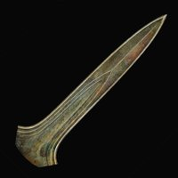

`

<!DOCTYPE html>
<html lang="en">
    <head>
        <link rel="icon" href="../static/favicon.ico">
        <link rel="stylesheet" href="../static/audiotour/css/components/tour-list.css">
        <link rel="stylesheet" href="../static/audiotour/css/components/audio-tour.css">
        <link rel="stylesheet" href="../static/audiotour/css/components/audio-stop.css">
        <link rel="stylesheet" href="../static/audiotour/css/components/audio-tour-index.css">
        <link href="https://fonts.googleapis.com/css2?family=Open+Sans:wght@300;400;600&display=swap" rel="stylesheet">

        <meta charset="utf-8" />
        <title>
            
            De MuseumFabriek audiotours (NL)
            
            
            
            
            
        </title>
        
        <meta name="viewport" content="width=device-width, initial-scale=1" />

        
        


        
        
        
    </head>

    <body class="">
        

        

<!---------------- audio_tour_index_page.html --------------------------

  Dit is de Home pagina van de audiotours van DeMuseumFabriek.
  Een gebruiker kan hier een keuze maken uit de beschikbare  audiotours.
  
  Fred van Goor, Februari 2026
  
----------------------------------------------------------------------->
  
  <div class="nav-slot">
      
      <a class="nav-button" href=  "/" >

          
      </a>
  </div>
  <h1>De MuseumFabriek audiotours (NL)</h1>
  
  <!-------------------- help popup ------------------------------------
  
    Een popup voor hulp verschijnt als de gebruiker
    op het vraagteken icoon klikt in de rechter bovenhoek
    van deze pagina.

  --------------------------------------------------------------------->
  <div class="help-widget">
    <button class="help-button">?</button>

    <div class="help-popup hidden">
        <div class="help-content">
            <ul>
                <li>
                  Dit is de lijst met beschikbare audiotours van de 
                  MuseumFabriek.
                  Hier kun je een audiotour uitkiezen.
                  Klik op één van de onderwerpen.
                </li>
                <li>
                  De eerste stop van de audiotour toont de route door
                  het museum die je moet volgen om bij de 
                  gekozen expositie te komen.
                </li>
                <li>
                  Klik op het symbool,
                  , 
                  om naar deze pagina terug te keren.
                </li>
            </ul>
            <button class="close-help">Sluiten</button>
        </div>
    </div>
  </div>
  <!------------------------- end help popup -------------------------->


  <div class="cover-images">
    
  </div>

  
    <div class="intro"><h2 data-block-key="tu1n5">Kies uit onderstaande lijst één van de audiotours.</h2></div>
  

  <ul class="tour-list">
    
      <li class="tour-item">
        <a href="./offerschatten/index.html" class="tour-link">
          
            <div class="tour-thumbnail">
              
            </div>
          
          
          <div class="tour-content">
            <h2>Offerschatten</h2>
            
              <p class="tour-description"><p data-block-key="xfo7a">Deze audiotour gaat over de expositie "Offerschatten"in Hal 1 van de MuseumFabriek.</p></p>
            
          </div>
        </a>
      </li>
    
  </ul>


        
        <script src="../static/audiotour/js/audio-tour.js"></script>
        <script src="../static/audiotour/js/audio-stop.js"></script>
        <script src="../static/audiotour/js/help-popup.js"></script>

        
        
        
    </body>
</html>
